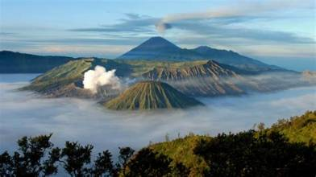
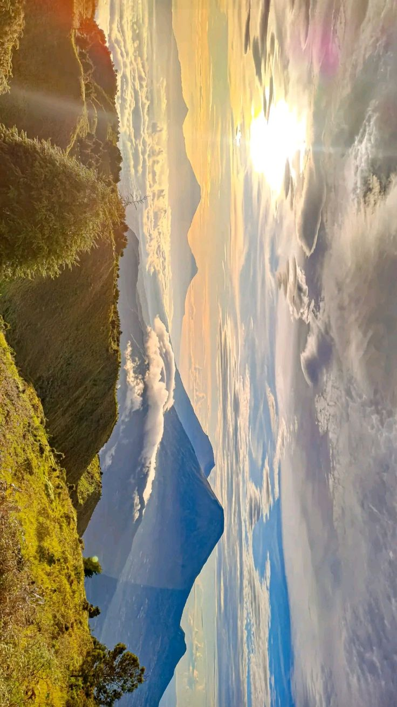
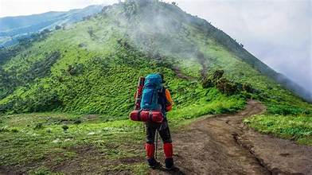
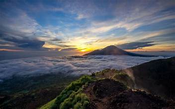

PENGETAHUAN
Mengenal Gunung di Indonesia
Pelajari karakteristik gunung, keindahan alam, dan informasi destinasi pegunungan di Indonesia.
Baca Selengkapnya →Temukan informasi, tips pendakian, dan cara menjaga keindahan alam Indonesia.

Indonesia memiliki banyak gunung dengan pemandangan, karakteristik, dan jalur pendakian yang beragam. Kenali salah satu destinasi pegunungan Indonesia dan daya tarik alamnya.
Baca Selengkapnya →
Pelajari karakteristik gunung, keindahan alam, dan informasi destinasi pegunungan di Indonesia.
Baca Selengkapnya →
Ketahui perlengkapan, persiapan fisik, dan hal penting yang perlu diperhatikan sebelum melakukan pendakian.
Baca Selengkapnya →
Pelajari kebiasaan sederhana untuk menjaga kebersihan gunung, mengurangi sampah, dan menghormati lingkungan alam.
Baca Selengkapnya →